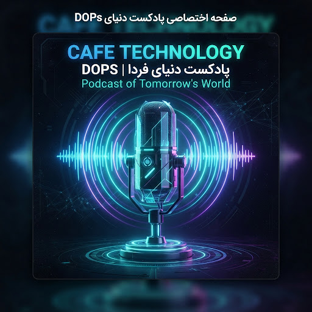
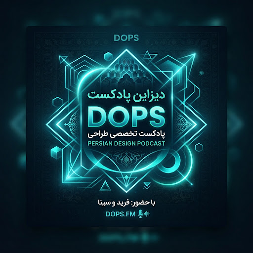

استودیوی خلاق پادکست
داشبورد جامع تولید محتوا
شنوندگان کل
headphones
۱۲۸.۰۴ هزار
↑ +۳.۸۲٪
کل پخشها
play_circle
۴۸.۶ هزار بار
↑ +۸.۲۶٪
دنبالکنندگان کانال
how_to_reg
۲۴.۰۸ هزار
↑ +۵.۷۱٪
درآمد ناخالص
account_balance_wallet
۱۸.۰۴ میلیون تومان
↑ +۳.۲۶٪
عملکرد و رشد پخش پادکست
روند تعداد پخشهای روزانه در بازه زمانی تعیینشده
۱ شهریور
۶ شهریور
۱۲ شهریور
۱۸ شهریور
۲۲ شهریور (اوج)
۲۶ شهریور
۳۰ شهریور
کل پخشهای بازه
۴۸,۶۲۰ بار
میانگین روزانه
۱,۶۲۰ بار
نرخ رشد دورهای
+۱۲.۸۶٪
زمان ماندگاری مخاطب
۶۴٪ طول قسمت
پادکستهای فعال من
مدیریت همه پادکستها ←
دنیای فردا
فناوری و هوش مصنوعی
۸۴ قسمت
• ۲۴.۸K شنونده فعال

نقطه صفر
تکنولوژی و وب
۲۶ قسمت
• ۷۴.۲K شنونده فعال

مسیر رشد
کسبوکار و ذهنیت
۲۸ قسمت
• ۵۲.۸K شنونده فعال
مخاطبان و موقعیت
ماه جاریشنوندگان جدید
۸,۴۲۰
↑ +۸.۲٪
بازگشتی
۲۳,۸۰۰
↑ +۲.۴٪
میانگین شنیدن
۳۱ دقیقه
↑ +۵.۲٪
پراکندگی جغرافیایی شنوندگان:
تهران و حومه
۴۸٪
اصفهان
۱۸٪
شیراز
۱۴٪
مشهد
۷٪
سایر استانها و بینالملل
۸٪
مدیریت آخرین قسمتها
بررسی وضعیت انتشار، آمار گوش داده شدن و ویرایش پروندههای صوتی
| عنوان قسمت و پادکست | تاریخ انتشار | مدت زمان | تعداد پخش | وضعیت | عملیات |
|---|---|---|---|---|---|
|
آینده عاملهای هوشمند؛ آیا هوش مصنوعی جای ما را میگیرد؟
دنیای فردا • قسمت ۸۴
|
۲۵ شهریور ۱۴۰۵ | ۴۲:۱۵ | ۱۳.۸K | منتشر شده |
|
|
نسل جدید ابزارهای هوش مصنوعی و مدلهای استدلالگر
دنیای فردا • قسمت ۸۳
|
۲۰ شهریور ۱۴۰۵ | ۲۸:۲۷ | ۹.۴K | منتشر شده |
|
|
آینده کسبوکارهای دیجیتال و خودکارسازی
مسیر رشد • قسمت ۲۸
|
۱۸ شهریور ۱۴۰۵ | ۳۵:۴۸ | ۷.۲K | منتشر شده |
|
|
اینترنت غیرمتمرکز و هویتهای هوشمند صوتی
نقطه صفر • قسمت ۳۷
|
۱۲ شهریور ۱۴۰۵ | ۲۹:۱۰ | ۵.۶K | پیشنویس |
|
فعالیتهای اخیر استودیو
قسمت جدید با موفقیت منتشر شد
«آینده عاملهای هوشمند» بر روی اسپاتیفای و کستباکس همگام شد.
۱۰ دقیقه پیشرشد تصاعدی دنبالکنندگان
۱۲۸ شنونده جدید به کانال پادکست دنیای فردا پیوستند.
۲ ساعت پیشدستیابی به رکورد جدید پخش
قسمت «آینده کسبوکارهای دیجیتال» از مرز ۱۰,۰۰۰ پخش گذشت.
۵ ساعت پیشدیدگاههای جدید در صف انتظار
۵ دیدگاه تایید نشده جدید برای بررسی ثبت شد.
امروز، ساعت ۰۸:۲۰واریز تسویه حساب ماهانه
مبلغ ۱۸.۴ میلیون تومان به شماره شبای استودیو منتقل شد.
دیروز، ساعت ۱۴:۰۰
دیدگاههای اخیر شنوندگان
۳۴۲ دیدگاه جدید«تحلیل بسیار عمیقی درباره شبکههای عصبی آینده بود؛ زاویه دید مهمان برنامه به جنبههای حقوقی و اخلاقی واقعاً چشمگشا بود. ممنون از کیفیت عالی صدا و محتوا!»

«توضیحات در بخش مقیاسپذیری بیزینس فوقالعاده کاربردی بود. اگر امکانش هست یک قسمت اختصاصی هم برای استارتاپهای نوپا ضبط کنید.»